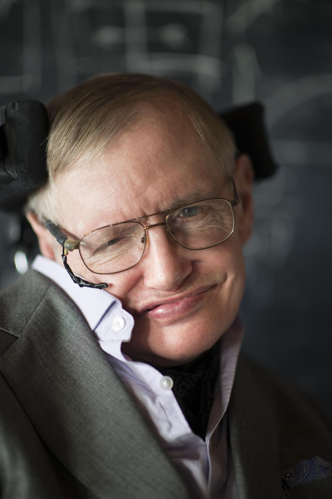

Stephen Hawking

8 January 1942 – 14 March 2018
- 1942: Born on January 8 in Oxford, England, exactly 300 years after the death of astronomer Galileo.
- 1962: Receives his B.A. in Physics at University of Oxford and begins research in cosmology and general relativity at University of Cambridge.
- 1963: First diagnosed with amyotrophic lateral sclerosis
- 1966: Completes doctorate, awarded fellowship at Cambridge
- 1968: Publishes highly-technical Large Scale Structure of Space Time
- 1970: By integrating cornerstones of modern physics – Newtonian Theory of Relativity and quantum theory – Hawking proposes that black holes leak energy and fade to nothing, phenomenon known as Hawking radiation
- 1976: Hawking argues that when black hole disappears all information about everything ever inside hole disappears too. This leads to Black Hole paradox: If information is lost forever then science can never know the past or predict the future
- 1985: After catching pneumonia he undergoes tracheotomy. Unable to speak naturally – communicates with head-controlled speech synthesizer
- 1988: A Brief History of Time published, goes on to sell more than 10 million copies
- 1993-2002: Writes books, essays and scientific articles explaining ways in which universe may be governed. Hawking’s celebrity status is acknowledged by The Simpsons – he is depicted drinking with Homer, suggesting he might steal Homer’s idea that universe is doughnut- shaped. Rock group Pink Floyd uses his synthesised voice for introduction to Keep Talking, on their 1994 album The Division Bell
- 2007: Becomes first quadriplegic to experience weightlessness on board so-called “vomit comet”, modified plane specially designed to simulate zero gravity
- 2014: Life story portrayed in film The Theory of Everything, charting his rise to fame and relationship with first wife, Jane
- 2014: Warns that creating an advanced artificial intelligence might be humanity's last and deadliest achievement.
- 2018: Dies on March 14 at the age of 76.
My goal is simple. It is a complete understanding of the universe, why it is as it is and why it exists at all.